Genel Bilgiler
Istram kurulumu 2 bölümden oluşur: koruma kurulumu ve uygulama kurulumu.
Burada ISTRAM®/ISPOL®'ün çalışması için sistem gereksinimleri ile programın ve lisans koruma sistemi sürücüsünün kurulum süreci belirtilmektedir. Bu sürücünün kurulumu, kurulacak lisans türüne bağlı olacaktır ve her durumda, bir lisansın türüne göre izlenecek süreç açıklanmaktadır:
- Donanım korumalı profesyonel veya eğitim amaçlı tek kullanıcılı.
- Donanım korumalı profesyonel çok kullanıcılı.
- Yazılım korumalı eğitim amaçlı tek kullanıcılı.
Ayrıca programın indirilmesi ve güncellenmesi, farklı kurulum şekilleri vb. ile ilgili çeşitli konular da açıklanmaktadır.
Kullanıcının, sahip olduğu lisans türüne göre kurulum talimatlarını DİKKATLİCE OKUMASI ve adımları adım adım takip etmesi rica olunur, çünkü kurulumla ilgili sorguların büyük bir yüzdesi yalnızca bu adımın dikkatli bir şekilde yapılmamasından, özellikle ağ (çok kullanıcılı) ve yazılım korumalı eğitim lisanslarının kurulumlarından kaynaklanmaktadır.
Sistem Gereksinimleri
Program daha düşük yapılandırmalarla çalışabilse de, kullanıcının rahat bir şekilde çalışabilmesi için, özellikle BIM ve Virtual 3D ile çalışılacaksa, en azından aşağıdaki yapılandırma önerilir:
- Windows® 7, 8 veya 10 (64 bit) işletim sistemi.
- INTEL i7 veya Xeon işlemci, tercihen 3 GHz'den yüksek işlemci hızı.
- En az 8 GB RAM bellek, 16 GB tavsiye edilir. Ne kadar hızlı olursa o kadar iyidir.
- Sabit diskte en az 1 GB boş alan (proje türüne bağlı olarak bu ihtiyacın çok daha fazla olabileceği dikkate alınmalıdır). Katı hal diski (SSD) şiddetle tavsiye edilir.
- 3D hızlandırmalı, NVIDIA veya AMD, en az 2 GB ayrılmış belleğe sahip ekran kartı. Anakartta entegre Intel grafikleri genellikle iyi sonuç vermez.
- En az 1280×1024 piksel çözünürlüğe sahip ekran.
Programın Kurulumu
CD veya USB Bellekten Kurulum
ISTRAM®/ISPOL® yazılımını kurmak için, programla birlikte verilen USB belleği ve donanım kilidini kullanmak yeterlidir. Bu aygıtların içeriği, izin verilirse resimde gösterilen gibi bir pencere gösterecek bir otomatik çalıştırma sistemine sahiptir.
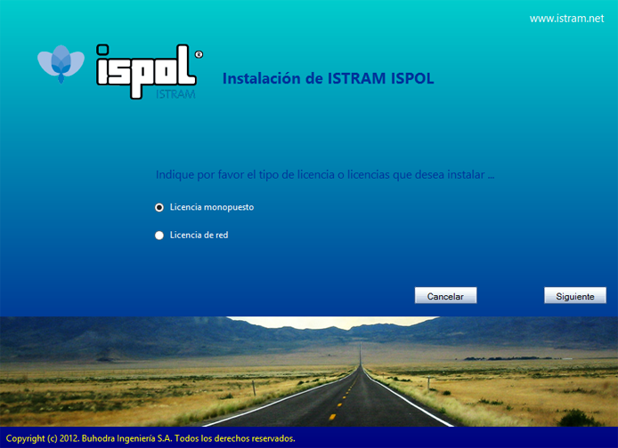
Kurmak istediğiniz tek kullanıcılı veya ağ (çok kullanıcılı) lisans türünü seçin ve "İleri" düğmesine basın.
Tek Kullanıcılı Lisans Kurulumu
Eğer tek kullanıcılı bir kurulum seçtiyseniz, bu ekran görünecektir.
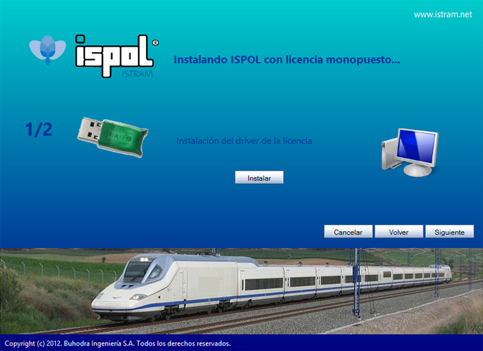
"Kur" düğmesi, kilidin sürücüsünü kurmayı sağlayan "HaspUserSetup.exe" programını çalıştırır. Sürücünün kurulum süreci daha sonra gösterilmektedir.
Windows 8'de bu adım gerekli olmayabilir, USB kilidini taktığınızda işletim sistemi internette arama yapar ve sürücüyü otomatik olarak kurar. Eğer bilgisayar internete bağlı değilse, sürücü buradan kurulabilir.
Bu adım, sürücü herhangi bir nedenle zaten kuruluysa da gerekli değildir.
Devam etmek için "İleri" düğmesine basın. Aşağıdaki resimdeki gibi bir ekran görünecektir.
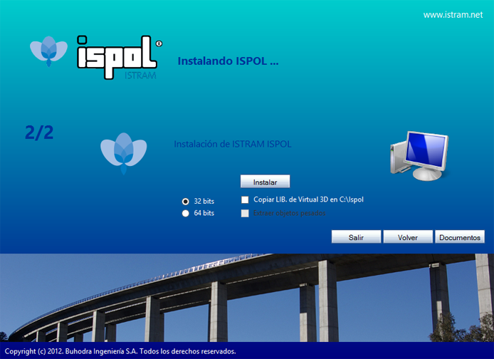
32 veya 64 bit sürümünü kurmak isteyip istemediğinizi seçin. Ayrıca modül 4 (Virtual 3D) kütüphanesinin ve ağır nesnelerin kurulmasını da seçebilirsiniz. Bu, yalnızca söz konusu modül satın alındıysa kullanışlıdır.
64 bit sürümü, 64 bit Windows 7 veya 64 bit Windows 8'e kurulabilir.
"Kur" düğmesi, 32 bit sürümü seçilirse "IstramSE.exe"yi veya 64 bit sürümü seçilirse "Istram64.exe"yi çalıştırır. Seçilirse Virtual 3D kütüphanesini de kopyalar.
Kurulum işlemi bittiğinde "Çıkış" düğmesine basabilirsiniz. Istram/ispol kurulumuna geçin.
Çok Kullanıcılı Lisans Kurulumu
Eğer çok kullanıcılı bir kurulum seçildiyse, bu ekran görünecektir.
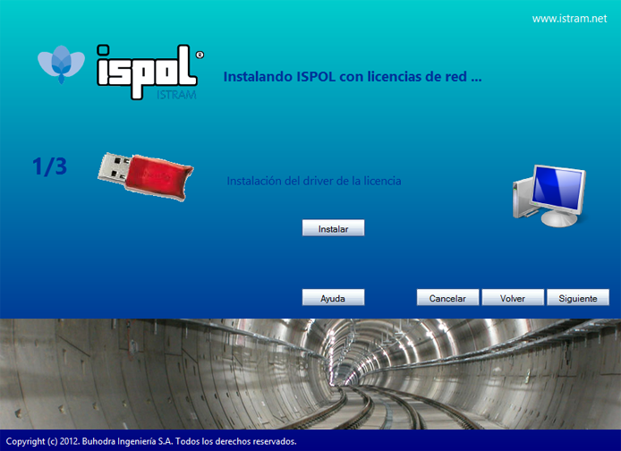
Dikkat, bu adım hem kilidin bağlı olacağı bilgisayarda hem de Istram/Ispol'ün kullanılacağı bilgisayarlarda gerçekleştirilmelidir.
"Kur" düğmesi, kilidin sürücüsünü kurmayı sağlayan "HaspUserSetup.exe" programını çalıştırır. Sürücünün kurulum süreci daha sonra gösterilmektedir.
Bu adım, sürücü herhangi bir nedenle zaten kuruluysa gerekli değildir.
Devam etmek için "İleri" düğmesine basın. Aşağıdaki ekran gösterilecektir.
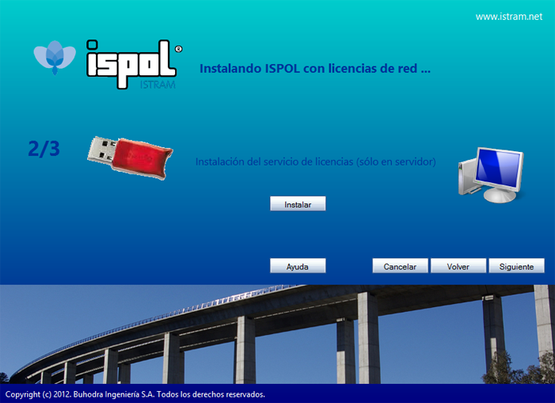
Dikkat, bu adım sadece ağ kilidinin bağlı olduğu bilgisayarda gerçekleştirilmelidir.
"Kur" düğmesi, "instalaSesionNetHasp.exe" programını çalıştırır ve Istram lisans sunucusunu kurar.
Devam etmek için "İleri" düğmesine basın. Aşağıdaki ekran gösterilecektir.
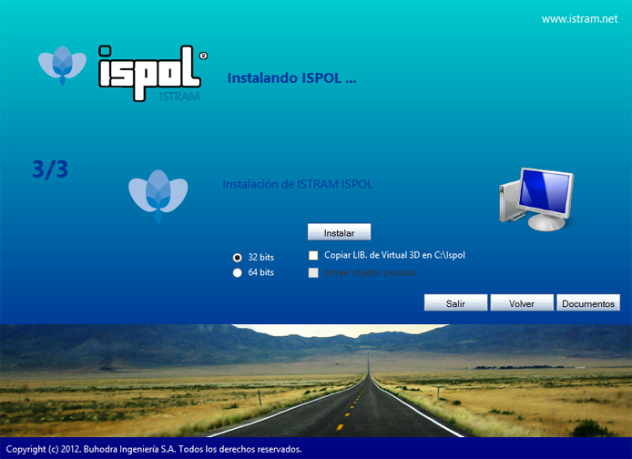
Dikkat, bu adım sadece Istram/Ispol'ün kullanılacağı bilgisayarlarda gereklidir.
32 veya 64 bit sürümünü kurmak isteyip istemediğinizi seçin. Ayrıca modül 4 (Virtual 3D) kütüphanesinin ve ağır nesnelerin kurulmasını da seçebilirsiniz. Bu, yalnızca söz konusu modül satın alındıysa kullanışlıdır.
64 bit sürümü, 64 bit Windows 7 veya 64 bit Windows 8'e kurulabilir.
"Kur" düğmesi, 32 bit sürümü seçilirse "IstramSE.exe"yi veya 64 bit sürümü seçilirse "Istram64.exe"yi çalıştırır. Seçilirse Virtual 3D kütüphanesini de kopyalar.
Kurulum işlemi bittiğinde "Çıkış" düğmesine basabilirsiniz.
Eğer CD veya USB belleği taktığınızda otomatik olarak başlamazsa, ilgili sürücüyü keşfedebilir ve \INSTALL klasörüne girebilirsiniz. Bu klasörde bu kılavuzda bahsedilen dosyalar bulunmaktadır.
Eğer kurulum CD'si yoksa, kullanıcının web sitemizin (http://www.istram.net/) İndirmeler ve kaynaklar alanına erişmesi ve bu kurulum dosyalarını edinmesi gerekecektir. Bu süreç, Programın Güncellenmesi. İnternetten İndirmeler bölümünde açıklanmaktadır.
Istram/Ispol Kurulumu
O zaman aşağıdaki adımlardan oluşan kurulum sihirbazı açılır:

Hoş geldiniz ekranı.
|
|
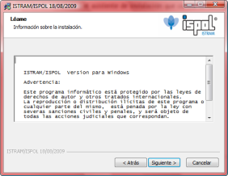
Yasal hususlar. Bu belgeyi dikkatlice okuyun.
|
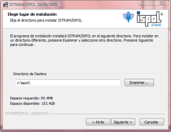
ISTRAM®/ISPOL® uygulamasını oluşturan dosya ve klasörlerin kurulumunun yapılacağı sabit diskinizdeki klasörün seçimi.
|
|
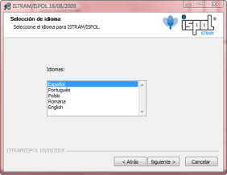
Dil seçimi. Uygulama sadece bir dilde kullanılabilir. ISTRAM®/ISPOL®'ü başka bir dilde kullanmak isterseniz, önceki kurulumun üzerine yenisini yazmanız gerekecektir.
|
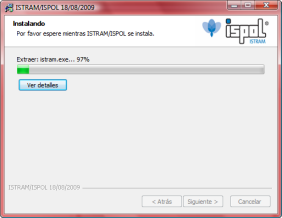
Tüm dosya ve klasörler kurulmaya başlanır. Virtual 3D için 'LIBSOL' kütüphanesinin kurulumu 150 MB'den fazla yer kaplar. Eğer bu modülü çalıştırmak için lisansınız yoksa, bu dosyaları kurmanıza gerek yoktur.
|
|
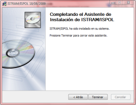
Süreç tamamlandığında, son bir ekran ISTRAM®/ISPOL® kurulumunun tamamlandığını bildirir.
|
Kurulum tamamlandıktan sonra iki yeni klasör oluşturulmuş olacaktır:
- C:\ISPOL klasörü (veya kullanıcının seçtiği konum), programın doğru çalışması için gerekli dosyaları ve kütüphaneleri içerir.
- C:\TRABAJO klasörü, kullanıcının programla çalışması ve her proje için bir alt klasör oluşturması önerilir. Bu klasörün içinde ayrıca DEMO adında basit bir örnek proje de kopyalanır.

|
Önceki kurulumun hiçbir şekilde yedeklenmediği, bunun da özellikle program kütüphanesi (\ISPOL\LIB) için kritik bir şekilde etkili olduğu dikkate alınmalıdır.
|
Eğitim Lisanslarının Sınırlamaları
Eğitim lisansları, bir dizi sınırlama ile profesyonel lisanslardan ayrılır. Bu tür bir lisansla ilişkili kısıtlama düzeyine bağlı olsa da, en önemli sınırlamalar şunlardır:
- Ekranda maksimum poliline sayısı, EDM'de aynı anda 50000'den fazla çizgi bulunamaz. Bu değer aşılırsa, program izin verilen maksimum sayının aşıldığını belirten bir mesaj gösterir.
- Maksimum GÜZERGAH PROJESİ eksen sayısı 10 ile sınırlıdır.
- Eksen başına maksimum 50 aliyman limiti.
- .dwg/.dxf veya .dgn dosyaları oluşturma imkansızlığı.
- Güvenlik kilidinin kurulumundan itibaren 180 gün boyunca programın kullanılabilirliği (NetHasp tipi yazılım kilidi olan lisanslar durumunda).
Ancak, duruma göre belirli koşullar altında kısıtlama seviyesini değiştirmek mümkündür. Eğitim lisansınızın sınırlamasını gevşetmeniz gerekiyorsa, lütfen durumunuzu incelemeleri için İdari Departmanımızla iletişime geçin.
Ayrıca, eğitim lisansı aktif olduğu sürece, kullanıcının hem kurulum hem de programın kullanımı için e-posta yoluyla teknik destek hakkı olduğunu unutmayın: soporte@istram.net.
Programa yeni başlayan kullanıcıların, her şeyden önce web sitemizde bulunan eğitimlerle pratik yapmaları tavsiye edilir. Bunların okunması ve uygulanması çok hızlıdır ve kullanıcının programın farklı menülerinde rahatça gezinebilmesi ve belirli karmaşıklıktaki projeleri üstlenebilmesi için programla yeterli bir ilk temas kurmasını sağlar.
Programın Eski Bir Sürümünü Yeniden Yükleme
Kullanıcı programı her güncellediğinde, istramSE.exe veya istram64.exe dosyasının bir kopyası \ISPOL\BACKUP klasöründe oluşturulur ve dosya adına sürümün tarih bilgisi eklenir.
Bu, kullanıcının herhangi bir nedenle belirli bir zamanda programın önceki bir revizyonuna geri dönmesi gerekirse, uygun tarihli kurulum dosyasını çalıştırarak bunu yapmasını sağlar.
|
Programın daha eski bir sürümüne geri dönülürse, programın daha yeni sürümleriyle oluşturulan verilerin doğru bir şekilde yorumlanamayabileceği ve beklenmedik sonuçlar doğurabileceği dikkate alınmalıdır.
|
Sessiz veya Katılımsız Kurulum
Bu tür bir kurulum, programı birden fazla bilgisayarda periyodik olarak güncellemekten sorumlu sistem yöneticileri için çok kullanışlı olabilir. Kurulum CD'sinde (\INSTALL\ADDINS), kullanıcının katılımını gerektirmeyen güncellemeler yapmayı sağlayan üç toplu işlem dosyası (.bat) sunulmaktadır:
- Istram SE Silent Spanish.bat
- Istram SE Silent Portuguese.bat
- Istram SE Silent Polish.bat
Bu dosyaların, istramSE.exe veya istram64.exe kurulum dosyasıyla aynı klasörde bulunması gerekir.
Dosyayı çalıştırdığınızda, görünüşte etkin olmayan bir sistem penceresi belirecektir, ancak istramSE.exe veya istram64.exe dosyasında bulunan en son revizyonun tüm dosyaları kuruluyor olacaktır. Herhangi bir düğmeye basmaya gerek yoktur ve ayrıca sistem, ISTRAM®/ISPOL® uygulamasının nerede bulunduğunu algılar, herhangi bir hata yapma olasılığını ortadan kaldırır ve güncellemenin her zaman doğru bir şekilde yapılmasını sağlar.
Eğer kurulum CD'si yoksa, yöneticinin model olarak kullanabileceği, toplu işlem dosyasının oluşturulması için gösterilen kod kullanılabilir. |
|
@echo off
cls
if exist istramSE.exe goto INSTALL
echo HATA, istramSE.exe bulunamıyor
echo.
goto END
:INSTALL
echo KURULUYOR . . .
istramSE.exe /S /LANG=es /DIR=C:\Ispol
echo.
echo ISTRAM/ISPOL kuruldu
:END
echo.
@pause
|
Lisans Koruma Sistemi Sürücüsünün Kurulumu
İki tür lisans vardır: tek kullanıcılı ve ağ. Birinciler, tüm profesyonel ve bazı eğitim lisansları tarafından kullanılan donanım (fiziksel donanım kilidi) koruma sistemine veya çoğu eğitim lisansının kullandığı yazılım (fiziksel olmayan donanım kilidi) koruma sistemine sahip olabilir. Ağ lisansları durumunda, hepsi bir donanım koruma sistemi kullanır, ancak kurulum profesyonel veya eğitim lisansları olmasına göre farklılık gösterir.
Fiziksel olarak, tek kullanıcılı donanım kilitleri üç tür olabilir:
- Paralel portlu, beyaz renkli. En eskileridir, bu nedenle değiştirilmeleri şiddetle tavsiye edilir. Unutmayın, teknik destek hizmetimize kayıtlıysanız, bu değişiklik bakım sözleşmesine dahildir.
- USB tipi, mor renkli, toplam uzunluğu yaklaşık 5,2 cm ve aktif olduğunda aydınlatmalı. Bu model de eskidir, bu nedenle değiştirilmesi tavsiye edilir.
- USB tipi, yeşil renkli, toplam uzunluğu yaklaşık 3,8 cm ve ayrıca aktif olduğunda aydınlatmalı. Şu anda teslim edilenlerdir ve öncekilere göre daha yüksek bir dahili yönetim kapasitesine sahiptirler.
Ağ donanım kilitlerine gelince, bunlar iki tiptir:
- USB tipi, kırmızı renkli, toplam uzunluğu yaklaşık 5,2 cm ve aktif olduğunda aydınlatmalı. Bu eski modeldir, bu nedenle değiştirilmesi tavsiye edilir.
- USB tipi, kırmızı renkli, toplam uzunluğu yaklaşık 3,8 cm ve ayrıca aktif olduğunda aydınlatmalı. Şu anda teslim edilenlerdir ve tek kullanıcılı kilitler durumunda olduğu gibi, öncekilere göre daha yüksek bir dahili yönetim kapasitesine sahiptir.
Kilidin sürücüsünün kurulumu, programın bir bilgisayara ilk kez kurulduğunda yalnızca bir kez gereklidir ve söz konusu lisansın türüne bağlı olarak, donanım kilidinin kurulum süreci aşağıda açıklandığı gibi farklı olacaktır.
|
Bir bilgisayarda aynı anda bir donanım kilidi ve bir yazılım kilidi (eğitim) kuruluysa, birincisine öncelik verilir. |
Donanım Korumalı (HASP Kilitleri) Tek Kullanıcılı Lisans
|
Bilgisayarda Windows 8 kuruluysa, sistem koruma donanım kilidini otomatik olarak tanıyacaktır (bilgisayarın internet bağlantısı olması gerekir), bu nedenle bu adım gerçekleştirilmemelidir.
|
Sürücüyü kurmak için, programın kopyasıyla birlikte verilen CD'yi kullanmak yeterlidir. Eğer bir yeniden kurulum ise, daha önce kurulmuş olan sürücünün kaldırılması gerekir.
CD'yi bilgisayarın optik sürücüsüne taktığınızda, resimde gösterilen gibi bir pencere otomatik olarak görünecektir.
Bu menüde, Kurulum ve dokümantasyon seçeneği seçilecektir.
Daha sonra, HASP kilidi için sürücü kurulumu seçeneğini seçmek yeterli olan yeni bir menüye erişilir.
Eğer CD veya USB bellek takıldığında otomatik olarak başlamazsa, okuyucu sürücüsünü keşfetmek ve \INSTALL klasörüne girmek gerekecektir. Oradayken, kurulum sürecini başlatmak için HASPUserSetup.exe dosyasına çift tıklamak gerekecektir.
Eğer kurulum CD'si yoksa, kullanıcının web sitemizin (http://www.istram.net/) İndirmeler ve kaynaklar alanına erişmesi
ve donanım kilidi sürücüsünün kurulum dosyasını (HASPUserSetup.exe) edinmesi gerekecektir.
O zaman aşağıdaki adımlardan oluşan kurulum sihirbazı açılır:
|
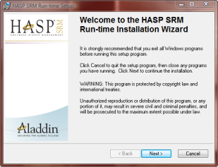
Hoş geldiniz ekranı. Devam etmek için [İleri >]'ye basın.
|
|
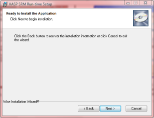
Sürücü kurulumuna devam etmek için onay.
|
|
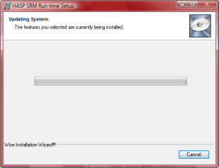
Sürücü kurulumu. Bu işlem birkaç dakika sürebilir.
|
|
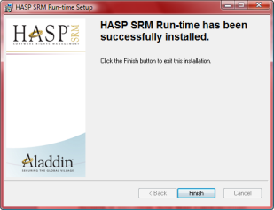
Süreç tamamlandığında, son bir ekran sürücü kurulumunun tamamlandığını bildirir.
|
Eğer donanım kilidi henüz makinenin USB veya paralel portuna (eski donanım kilitleri) takılmamışsa, işletim sisteminin onu tanıyabilmesi için şimdi takma zamanıdır.
|
Aynı bilgisayara birden fazla ISTRAM®/ISPOL® koruma NetHASP kilidi takmak mümkün değildir. |
Yazılım Korumalı Tek Kullanıcılı Eğitim Lisansı
Bu lisans kontrolü sadece eğitim lisansları için mevcuttur ve aktivasyonu internet üzerinden yapılır, dolayısıyla fiziksel bir anahtar gerekmez. İnternet bağlantısı sadece bir kez, tam olarak anahtarı etkinleştirme anında gereklidir.
|
Bu kapsamda olmayan ISTRAM®/ISPOL® lisansları için kullanmayın. |
Yeni kullanıcılar için:
- HaspUserSetup.exe lisans kontrolünü indirip kurmak GEREKMEZ.
- Lisans kontrolünü kurmadan ISTRAM®/ISPOL®'ü BAŞLATMAYIN (çalışmayacaktır).
Zaten fiziksel kilitli bir eğitim lisansına sahip olan veya herhangi bir ISTRAM®/ISPOL® sürümünün bulunabileceği bir bilgisayar kullanan kullanıcılar için:
- HASP kilit sürücüsünü kaldırmaya gerek yoktur.
- Bilgisayarın bir profesyonel lisansa erişimi olması durumunda, başlatmada ikincisine öncelik verilecektir (daha sonraki Yazılım korumalı bir eğitim lisansının kurulumunda olası sorunlar başlığını okuyun).
- Bir ağ lisans kontrolünün olduğu bilgisayarlarda ÇALIŞMAZ (HASPLicenseManager veya HASPLoader'ı kaldırın, ad kullanılan LMSetup sürümüne bağlıdır).
LİSANS KURULUM VE AKTİVASYON TALİMATLARI
Lütfen eğitim lisansınızın kurulumu için bu adımları sıkı bir şekilde takip edin:
- Bu kilit, yönetici izinlerine sahip bir kullanıcı tarafından kurulmalıdır, bu belgede belirtilen tüm prosedürler, bunları gerçekleştiren kullanıcının yönetici izinlerine sahip olduğunu varsayar.
- Web sitemizden (bu kılavuzun Programın Güncellenmesi. İnternetten İndirmeler bölümüne bakın) istramSE.exe ve LlaveEducacional.rar dosyalarını indirin.
- LlaveEducacional.rar dosyasını masaüstüne veya sistemin herhangi bir klasörüne açın. .rar dosyasının içeriğinin bir klasöre gerçekten açıldığından veya çıkarıldığından emin olmak gerekir.
- Eğer etkinse, Windows güvenlik duvarını (firewall) veya kurulu olan başka bir şirketin güvenlik duvarını ve varsa antivirüs programını geçici olarak devre dışı bırakmanız tavsiye edilir. Örneğin, aşağıdaki antivirüs programları için:
|
Bazı güvenlik paketleri, yazılım kilidinin kurulum sürecini bir truva atı olarak algılayabilir ve durdurabilir. Kullanıcı endişelenmemelidir, çünkü bu eylemi gerçekleştirmek güvenlidir. |
- instalar_llave_educacional.bat dosyasını üzerine çift tıklayarak çalıştırın. Bu program, bilgisayarınızı eğitim lisansının etkinleştirilmesine izin verecek şekilde hazırlar ve kurulumundan itibaren 7 gün sonra sona erer. Lisansı etkinleştirmeden bu sürenin geçmesine izin vermeyin, aksi takdirde iptal edilecektir.
- istramSE.exe kurulum dosyasını çalıştırın; bu, ISTRAM®/ISPOL®'ü bilgisayarınıza kuracaktır. Daha önce açıklandığı gibi, kurulum çok basit bir süreçtir, sadece istediğiniz dili seçmeniz gerekir. Kurulumdan sonra bilgisayarınızı yeniden başlatmanıza gerek yoktur.
- 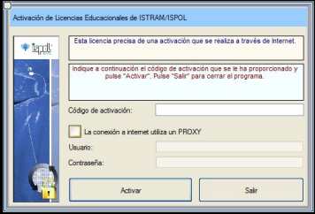ISTRAM®/ISPOL®'ü başlatın. İlk çalıştırmada, lisansınızı yetkilendirmenizi isteyen bir iletişim kutusu görünecektir. Bu anda (ve sadece bu sefer) internet üzerinden bir bağlantı kurmak gerekir. Eğer internet bağlantınız bir proxy kullanıyorsa, ilgili verileri girmeniz gerekecektir.
- İdari Departmanımızın size e-posta ile göndermiş olduğu yetkilendirme anahtarını girin. [Etkinleştir]'e basın ve veriler doğruysa, 'Lisans Etkinleştirildi' gibi bir onay mesajı göreceksiniz.
- Eğer devre dışı bırakıldıysa, antivirüs ve güvenlik duvarını etkinleştirin. Genellikle devre dışı bırakıldıkları aynı prosedürle yeniden etkinleştirilirler.
- Bu andan itibaren, eğitim sürümünde ISTRAM®/ISPOL®'ü altı ay boyunca kullanabilirsiniz. Bu süre zarfında, ayrıca programı istediğiniz kadar güncelleyebilir ve programla ilgili herhangi bir şüpheniz için e-posta yoluyla (soporte@istram.net) Teknik Destek Departmanı ile iletişime geçebilirsiniz.
|
Lütfen Eğitim lisanslarının sınırlamaları bölümündeki eğitim lisanslarının kısıtlamalarını okuyun. Unutmayın ki, eğitim lisanslarının amacı, kurs öğrencilerinin ISTRAM®/ISPOL® programının kullanımıyla ilgili edindikleri bilgileri pratik yapmalarını sağlamaktır.
|
YAZILIM KORUMALI BİR EĞİTİM LİSANSININ KURULUMUNDA OLASI SORUNLAR
ISTRAM®/ISPOL®'ün eğitim yazılım kilidi kurulduğunda, bazen kurulumun yapıldığı bilgisayarın yapılandırmasına bağlı olarak başarıyla tamamlanamayabilir. Bu bölümü okumadan önce, kurulumdan önce bilgisayarda kurulu olan herhangi bir güvenlik duvarını veya antivirüsü geçici olarak devre dışı bıraktığınızdan ve kurulum işleminin Yönetici olarak yürütüldüğünden emin olun. Eğer hala sorunlar devam ediyorsa, o zaman aşağıdaki durumları kontrol etmek gerekecektir:
Durum 1:
|
Program aktivasyon kodunu istemiyor
O zaman eğitim lisansının, işletim sisteminin .bat dosyasının doğru çalışmasını engellemesi nedeniyle doğru bir şekilde kurulmamış olması çok muhtemeldir. Bu nedenle, bu adımları izleyerek 'manuel' olarak çalıştırmak gerekir:
- LlaveEducacional klasörünü sabit diskin kök dizinine kopyalayın:
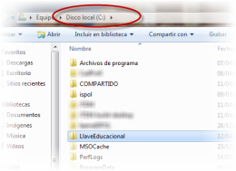
|
|
- Başlat düğmesinden, cmd komutunu çalıştırın (komutu yazdıktan sonra <Enter>'a basarak).
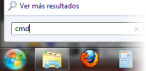
|
- 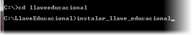Komut satırı açıldıktan sonra, aşağıdaki komut dizisini yazın ve her birinden sonra <Enter>'a basın:
cd\
cd llaveeducacional
instalar_llave_educacional
- Lisans kurulmaya başlar. Bilgisayarınızda kurulu olan güvenlik programlarının (antivirüs, güvenlik duvarı, casus yazılım önleyici,...) olası uyarılarına dikkat edin ve bilgisayarda yapılacak değişikliklere izin verin.
- Windows Vista/7'de, sonunda programın doğru bir şekilde kurulmamış olabileceğini belirten bir uyarı görüntülenebilir. Doğru bir şekilde kurulduğunu belirtin.
- ISTRAM®/ISPOL®'ü normal şekilde başlatın. Şimdi aktivasyon kodunu isteyen kutu görünmelidir.
|
|
Durum 2:
|
Sistemde HASP veya HardLock tipi (donanım veya yazılım), ancak Aladdin/SafeNET üreticisine ait OLMAYAN başka bir kilit kurulu.
Bu durumda sorun yaşanmaması gerekir, ancak lisansın başka bir bilgisayara kurulması tavsiye edilir.
|
| Durum 3:
|
Sistemde başka bir program tarafından kullanılan Aladdin/SafeNET üreticisine ait HASP tipi (donanım veya yazılım) başka bir kilit kurulu.
Bu durumda da sorun yaşanmaması gerekir, ancak lisansın başka bir bilgisayara kurulması da tavsiye edilir.
|
| Durum 4:
|
Sistemde ISTRAM®/ISPOL® için kullanılan Aladdin/SafeNET üreticisine ait HASP tipi (donanım) başka bir kilit kurulu.
Program, eğitim lisansına göre profesyonel lisansa öncelik verir, bu nedenle birincisine karşılık gelen donanım kilidinin bağlantısı kesilmelidir.
Bilgisayarın bir profesyonel ağ lisansına erişebileceği bir ağa bağlı olması durumunda, program da buna öncelik verecektir, bu nedenle eğitim lisansını kullanırken ağ kablosunun çıkarılması gerekecektir.
|
| Durum 5:
|
Aladdin/SafeNET üreticisinden bir NetHASP (ağ) kilidi kurulu veya ilişkili yazılımı bilgisayarda kurulu kalmış.
Bu durumda, uyumsuz oldukları için (üreticinin kendisi de böyle belirtir) ağ kilidi kaldırılana kadar yazılım kilidini kurmak mümkün değildir.
|
Ağ kilidiyle ilişkili yazılımın kurulu kalıp kalmadığını bilmek için, Denetim Masası → Yönetimsel Araçlar → Hizmetler'de HASPLicenseManager veya HASPLoader hizmetlerinin mevcut olup olmadığını kontrol etmek yeterlidir.
|
|
Sistemde kurulu olabilecek HASP kilitleriyle ilişkili sürücülerin ve yazılımların temiz bir şekilde kaldırılmasını sağlamak ve programı hala başlatamadıysanız, aşağıdaki bölümleri okuyun.
HASP YAZILIMININ MANUEL KURULUMU VE KALDIRILMASI
Herhangi bir HASP yazılımını, bir Komut İstemi penceresinden (Windows Vista ve 7'de sağ tıklayarak ve içerik menüsündeki Yönetici olarak çalıştır seçeneğini kullanarak açmanız tavsiye edilir) aşağıdaki komutu yürüterek manuel olarak kaldırmak ve kurmak mümkündür:
haspdinst
-fr -purge
Ardından, aynı pencereden, yazılım kilidi şu komutla kurulur:
haspdinst -i
Eğer bu komut başarıyla tamamlanmazsa, bir sonraki bölümde açıklanan alternatif kurulum prosedürünü kullanın.
Bu komutları yürütmek için, Komut İstemi penceresinde o dosyanın bulunduğu klasörde olduğunuz varsayılır.
ALTERNATİF KURULUM PROSEDÜRÜ
Yazılım kilidinin kurulumunda normal prosedürün başarısız olması durumunda (tüm HASP kilitleri haspdinst -fr -purge komutuyla kaldırılmış olsa bile), hatalı öğeleri ortadan kaldırmak için bu prosedür uygulanabilir:
- Program Ekle veya Kaldır'dan (Windows XP) veya Programlar ve Özellikler'den (Windows Vista ve 7) tüm HASP bileşenlerini kaldırın. Eğer daha önce bahsedilen manuel kaldırma komutu yürütüldüyse, muhtemelen hiçbiri görünmeyecektir.
- Windows hizmetlerinden HASP veya HLServer ile başlayan herhangi bir hizmeti durdurun. Denetim Masası → Yönetimsel Araçlar → Hizmetler'de bu adlara sahip herhangi bir hizmeti durdurun.
- Eğer varsa, C:\windows\system32\drivers'dan herhangi bir aks*.* (yani, aks ile başlayan ve herhangi bir uzantıya sahip olan), Hardlock.sys veya haspnt.sys dosyasını silin.
- Aygıt Yöneticisi'nden (Bilgisayarım → Özellikler → Donanım → Aygıt Yöneticisi, Windows XP'de; Bilgisayar → Sistem özellikleri → Aygıt Yöneticisi, Windows Vista ve 7'de), Görünüm menüsünde Gizli aygıtları göster seçeneğini seçin ve Tak ve Çalıştır Olmayan Sürücüler seçeneğini genişletin ve gösterilen bu aygıtlardan, eğer varsa, "hardlock", "Haspnt" veya "Hasp fridge"i kaldırın.
- Yazılım kilidini daha önce bahsedilen manuel şekilde yeniden kurun (dosyanın bulunduğu klasördeki Komut İstemi'nden haspdinst -i'yi çalıştırın).
Eğer bu kurulum da başarısız olursa, verilerinizi ve hata mesajlarını içeren ekran görüntülerini soporte@istram.net'e gönderin, böylece biz de Aladdin/SafeNET ile iletişime geçebiliriz.
YAZILIM KORUMALI BİR EĞİTİM LİSANSININ ÇALIŞTIRILMASI SIRASINDA OLASI SORUNLAR
Durum 1:
|
Lisans çalışmayı durdurdu.
Bu, aşağıdaki nedenlerden birine bağlı olabilir:
- Lisansın süresi doldu. Uzatma talep etmek isterseniz Buhodra Ingeniería, S.A. ile iletişime geçin.
- Eğitim kilidini olası bir tehdit olarak algılayan ve yanlış bir pozitif üreten bir güvenlik yazılımı (antivirüs, güvenlik duvarı, casus yazılım önleyici,...) kuruldu. ISTRAM®/ISPOL®'ü çalıştırırken güvenlik yazılımını devre dışı bırakın.
|
Durum 2:
|
Belirli bir sayıda çizgiden daha fazlasını içeren çizimleri yüklemek mümkün değil, eksen ve aliyman sayısı sınırlı, DWG/DXF'e dışa aktarmak mümkün değil,...
Bu sınırlamalar, Eğitim lisanslarının sınırlamaları bölümünde açıklandığı gibi, eğitim lisansına özgüdür.
|
Ağ veya Çok Kullanıcılı Lisanslar (NetHASP Kilitleri)
Ağ lisans sunucusu sistemi, şirketinizin farklı bilgisayarlarına (istemciler) çalışma izinleri sunmayı sağlar; bu da kayıp, bozulma vb. riskleri olan bireysel kilitleri takıp çıkarma gerekliliğini ortadan kaldırır.
NetHASP kilitleri, tek bir kilit ile birden fazla ISTRAM®/ISPOL® lisansının yönetimini sağlar. Bu tür kilitlerle çalışmak, kilidi kontrol eden bir yazılımın kurulmasını gerektirir. Bu yazılım, NetHasp kilidinin bağlanacağı bilgisayara kurulmalıdır (bu bilgisayar, kilit bağlıyken kilit sunucusu işlevi görecektir). Bu yazılımı, ISTRAM®/ISPOL®'ün çalıştırılacağı bilgisayarlara (istemci bilgisayarlar) kurmak gerekli değildir, meğer ki hem sunucu hem de istemci olmasınlar.
Bu sistem, çalışma bilgisayarlarının ek bir yapılandırmasını gerektirir. Bu yapılandırma, sunucu bilgisayarın çalışmasını optimize etmeye ve istemci bilgisayarlara ISTRAM®/ISPOL® ile çalışmak için nasıl ve nereye bağlanacaklarını belirtmeye yarar.
ISTRAM®/ISPOL®'ün ağ kilitleriyle çalışması için gerekli tüm dosyalar, lisanslarla birlikte dağıtılan CD veya USB belleklerde, \Install klasöründe bulunur. Ayrıca, ISTRAM®/ISPOL®'ün web sitesinden (http://www.istram.net/) indirme alanından da indirilebilirler (nethasp.rar). Dosyalar şunlardır:
- HaspUserSetup.exe
- instalaSesionNetHasp.exe
Aşağıda, bu tür kilitlerin doğru kurulumu için izlenecek sürecin bir şeması gösterilmekte ve ardından her bir adım ayrıntılı olarak açıklanmaktadır.
Sunucuda:
- Önce HaspUserSetup.exe ağ kilidi sürücüsünü kurun.
- Ardından, instalaSesionNetHasp.exe dosyasına çift tıklayarak SesionNetHasp hizmetini kurun.
- Programı sunucuda da kurup onunla çalışmak mümkündür.
Eğer güvenlik duvarı (firewall) varsa:
- 1947 numaralı portu TCP modunda açın, ancak bu işlemi genellikle kilit sürücüsü zaten yapar.
- 12345 numaralı portu TCP modunda açın.
Ağda:
- HaspUserSetup.exe ağ kilidi sürücüsünü kurun.
- ISTRAM®/ISPOL®'ü, kurulum programı (IstramSE.exe veya Istram64.exe) aracılığıyla programı kullanacak her bilgisayara kurun.
|
Aynı bilgisayara birden fazla ISTRAM®/ISPOL® koruma NetHASP kilidi kurmak mümkün değildir.
|
NetHasp kilitlerinin kontrolü
Kilit sürücüsü kurulduktan ve kilit bağlandıktan sonra, sürücü tarafından sunulan bir web sitesine erişilebilir: http://localhost:1947.
Bu web sitesinde, Istram/Ispol ile çalışmak için faydalı olabilecek, bağlı kilit hakkında bilgi bulunabilir.
Sürücü hem kilidin bağlı olduğu bilgisayarda hem de Istram/Ispol'ü kullanacak olan bilgisayarlarda kurulu olduğu için, bu web sitesine her birinden erişilebilir ve yardımcı programlarından yararlanılabilir.
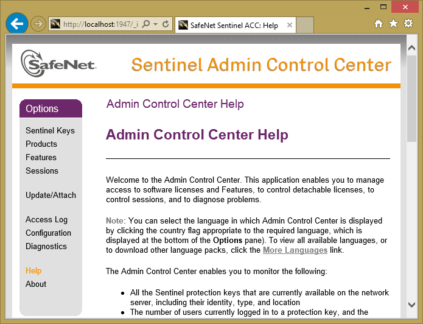
Sentinel Keys seçeneğinde erişilebilen kilitler gösterilir. Bunlar yerel kilitler (ağ veya değil) ve uzak ağ kilitleri olabilir.
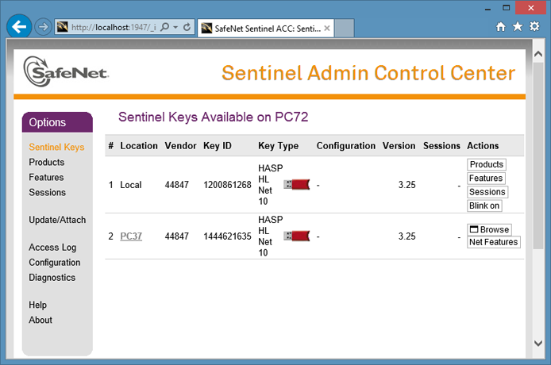
Features seçeneğinde 2 satır görünmelidir.
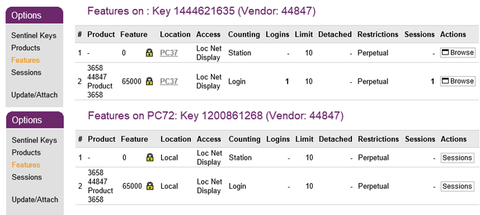
Ve Configuration seçeneğinde, hangi "sunucu" bilgisayara erişileceği veya hangi "istemci" bilgisayarlardan erişilebileceği belirtilebilir.
Kilidin bağlı olduğu bilgisayardan "Access from remote clients" sekmesi kullanılabilir ve bu ağ kilidiyle çalışabilecek IP listesi belirtilebilir. "Access Restrictions" listesinde, bu kilide erişilebilecek IP adresleri (her satıra bir tane) belirtilebilir. Varsayılan seçenek herkese izin vermektir. "Allow access from remote clients" seçeneği işaretlenmezse, sadece kilidin bağlı olduğu bilgisayardan erişilebilir. Değişiklikler "Submit" düğmesiyle kabul edilir. Gri renkte görünen ve değişikliklerin etkili olmasının birkaç dakika sürebileceğini belirten mesaja dikkat etmek önemlidir.
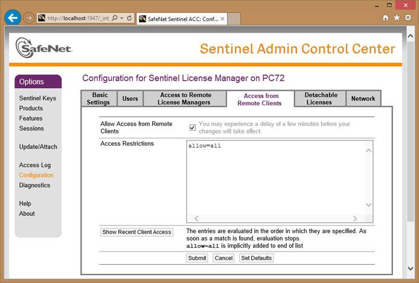
Istram'ı kullanan diğer bilgisayarlardan, "Access to remote license managers" sekmesi kullanılabilir ve Istram'ın lisans almak için bağlanacağı, ağ kilidine sahip olan "sunucu"nun IP adresi belirtilebilir. Ayrıca, yerel bir kilit kullanmak için hiçbir ağ kilidine erişilmemesi de belirtilebilir.
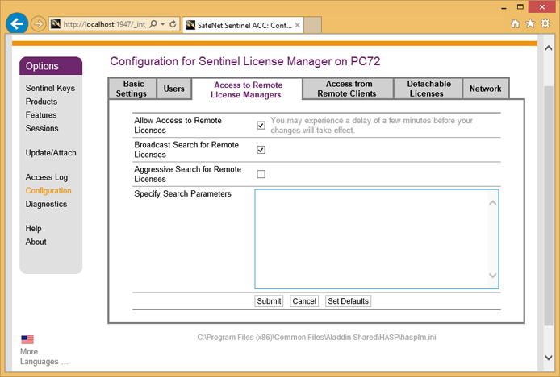
Belirli bir sunucuya erişmek için "Broadcast" seçeneğinin işareti kaldırılmalı ve "Specify search parameters" bölümünde IP adresi belirtilmelidir.
Değişiklikler "Submit" düğmesiyle kabul edilir. Gri renkte görünen ve değişikliklerin etkili olmasının birkaç dakika sürebileceğini belirten mesaja dikkat etmek önemlidir.
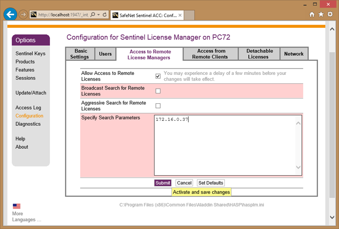
ISTRAM®/ISPOL®'ÜN NETHASP KİLİTLERİYLE ÇALIŞMASI VE KORUNMASI HAKKINDA DİKKAT EDİLMESİ GEREKENLER
- Bir NetHASP kilidi, 1 ila 50 ISTRAM®/ISPOL® lisansına hizmet edebilir. Eşzamanlı oturum sayısı, sözleşmeli lisans sayısına ve bakımı ödenen sürümlerine bağlı olacaktır.
- Ağ hizmeti herhangi bir nedenle kesilirse veya sunucu kullanılamaz hale gelirse veya HLM'nin (HASP Lisans Yöneticisi) çalışması kesilirse, bireysel kullanım için bir kilidiniz (tek kullanıcılı) olmadıkça ISTRAM®/ISPOL® çalıştırılamaz.;
- Ağ yükü, NetHASP kilidinde saklanan bilgilere erişim hızını etkiler.
- NetHASP ve HLM kilitleri, ISTRAM®/ISPOL® ile yalnızca TCP-IP ağ protokolüyle çalışır.
- Bir NetHASP'nin bulunduğu bir ağa ait bir PC'de tek kullanıcılı bir kilit varsa, ISTRAM®/ISPOL®, her iki kilit de o PC'de olsa bile yerel kilit ile çalıştırılacaktır.
- ISTRAM®/ISPOL®, kullanıcıya (ekranın üst kısmında) devam eden yürütmenin işgal ettiği oturum numarasını bildirir.
PROFESYONEL LİSANS YÖNETİM HİZMETİNİN KURULUMU: SesionNetHasp
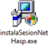 Bu hizmetin kurulumu, ağ kilidinin bağlı olduğu bilgisayarda instalaSesionNetHasp.exe kurulum programı çalıştırılarak yapılır. Ardından, bu hizmet ile istemci bilgisayarlarda çalıştırılan ISTRAM®/ISPOL® arasındaki iletişim ve oturum izleyicisi aracılığıyla yönetimi için iki port açılmalıdır. Bu hizmetin kurulumu, kurulumu yapan kullanıcının yönetici izinlerine sahip olmasını gerektirir.
Bu programın kurulumu aşağıdaki adımları izler:
|
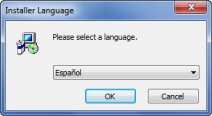
Windows Vista/7/8'de, programı çalıştırmak için izin isteyerek başlar, bu nedenle [İzin Ver] seçeneği seçilecektir. Ardından, kurulum programının çalışacağı dili sorar. Seçildikten sonra [OK] tuşuna basılır.
|
|
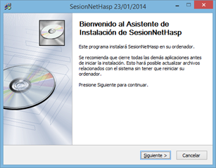
Daha sonra, kurulacak uygulamayı sunan iki pencere belirir. Bu pencerelerde [İleri > ]'ye basılacaktır.
|
|
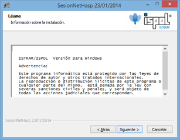
Bu pencere yasal hususları gösterir. Okunduktan sonra [İleri > ]'ye basılacaktır.
|
|
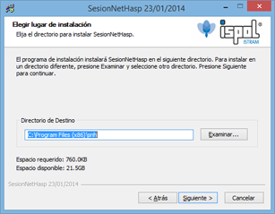
Kurulum programı, hizmetin destek dosyalarının kopyalanacağı bir klasör ister. Klasör seçildikten veya varsayılan olarak önerilen klasör kabul edildikten sonra, [İleri >]'ye basılır.
|
|
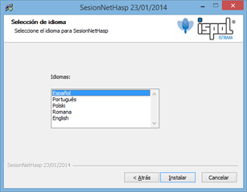
Ardından hizmetin çalışma dili seçilir ve [İleri >]'ye basılır.
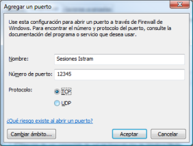
|
|
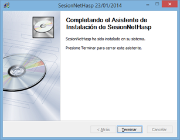
Son olarak, sistemi yeniden başlatmak isteyip istemediğiniz sorulur. Çoğu durumda yeniden başlatmaya gerek yoktur, hizmet doğru bir şekilde başlar ve hemen kullanılabilir. Ancak bazı bilgisayarlarda durum böyle olmayabilir. Bu durumda, bilgisayar yeniden başlatıldığında bu hizmet çalışır durumda olacaktır. Eğer bu bilgisayar, diğer programların ve hizmetlerin bağlı olduğu bir sunucu ise, uygun olmayan bir zamanda yeniden başlatmak tehlikeli olabilir, bu nedenle bu kurulumun, bilgisayarı yeniden başlatmanın hiçbir kullanıcıya veya uygulamaya zarar vermeyeceğinden emin olunduğunda yapılması tavsiye edilir.
Bilgisayar yeniden başlatılmazsa, [Bitir] düğmesine basılan bir pencere gösterilir.
|
|
|
|
Programın Güncellenmesi
Programı sık sık güncellemeniz tavsiye edilir, çünkü bu, ISTRAM®/ISPOL®'ün sürekli geliştirme politikasından yararlanmanın en iyi yoludur. Güncelleme süreci çok basit olsa da, şunları dikkate almakta fayda var:
- Sizin kurulu olanınızdan daha yüksek bir program sürümüyle yapılan projeler, mantıksal olarak farklı dosyalara daha fazla (veya farklı) veri yazar. Eski sürümlerin çalışmaya devam etmesi için tüm yeni işlevler izlense de, bazen anormal bir veri yüklemesi gerçekleşebilir. En iyisi her zaman güncel olmaktır.
- ISTRAM®/ISPOL® tarafından varsayılan olarak kurulan temel kütüphane sürekli büyümektedir, ancak en mantıklısı, çok daha spesifik (proje düzeyinde veya şirket düzeyinde) kendi kütüphanenize sahip olmaktır. Mevcut kütüphanenin dizininde (varsayılan olarak \ispol\lib) iyileştirmeler yapmayın, program tarafından her zaman saygı duyulacak bir kullanıcı konumu (\ispol\libuser örneğin) kullanın. Son çare olarak, programın kütüphanenin önceden bir yedek kopyasını almasını her zaman belirtebilirsiniz.
|
Özellikle grup halinde çalışıyorsanız veya diğer şirketlerden ISTRAM®/ISPOL® formatında veri alıyorsanız, sürüm sorunları olabileceğini unutmayın. Daha yüksek bir sürümle oluşturulmuş veriler size teslim edilirse, bunları yüklemeye çalışırken bir sorun ortaya çıkabilir.
|
Programı güncellemek için iki alternatif yol vardır: doğrudan programın kendisi aracılığıyla veya programın kurulum dosyasını web sitemizden indirerek.
Doğrudan Programın Kendisinden Güncelleme
Bu, tavsiye edilen seçenektir, ancak kullanıcının bilgisayar üzerindeki haklarına bağlı olarak bazı durumlarda çalışmayabilir, bu nedenle güncellemenin web üzerinden yapılması gerekebilir. İzlenecek adımlar şunlardır:
- 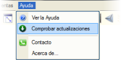Programın ana menüsünde Yardım → Güncellemeleri Kontrol Et seçeneğini seçin.
- O zaman program güncelleme sunucusuna bağlanmaya çalışırken bir ilerleme çubuğu gösterilir. Eğer program bağlanamazsa, bir hata mesajı gösterilir. Bu genellikle kullanıcının gerekli erişim izinlerine sahip olmamasından kaynaklanır (program güncellenmek için bir FTP sunucusu kullanır).
- Ardından, bir iletişim kutusu mevcut sürüm hakkında bilgi ve eklenen en son yeniliklerin kısa bir açıklamasını gösterir. [Güncelle] butonu güncelleme sürecini başlatır.
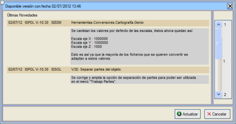
- 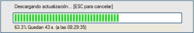Son olarak, programın en son sürümünün indirilmesi ve kurulmasına geçilir. Bir ilerleme çubuğu indirme süreci hakkında bilgi gösterir ve ardından, bir mesaj programın kurulum için kapanacağını bildirir ve kullanıcıya projesindeki değişiklikleri kaydetme fırsatı verir.
Ayrıca kullanıcıya, bakım sözleşmesi aktif değilse programı kurmaması gerektiği, çünkü o zaman programın çalışmayacağı bildirilir. Her durumda, indirilen sürüm, kurulum klasörünün \backup alt klasörüne kaydedilmiştir, bu nedenle kullanıcı yeniden indirmeye gerek kalmadan ona başvurabilir.
Web Üzerinden Güncelleme
Bu, tavsiye edilen seçenektir, ancak kullanıcının bilgisayar üzerindeki haklarına bağlı olarak bazı durumlarda çalışmayabilir, bu nedenle güncellemenin programın kendisinden yapılması gerekebilir.
Güncelleme çok basittir, sadece web sitemizin indirmeler ve kaynaklar alanından elde edilen kurulum dosyasını (istramSE.exe) çalıştırmanız yeterlidir; bu, eski dosyaları yeni sürümlerle yeniden yazacaktır. İzlenecek adımlar şunlardır:
- http://www.istram.net/ sayfasına erişin:
- Ürün (ISTRAM®/ISPOL®) seçilir ve Destek, İndirmeler ve Eğitim alanına erişilir:
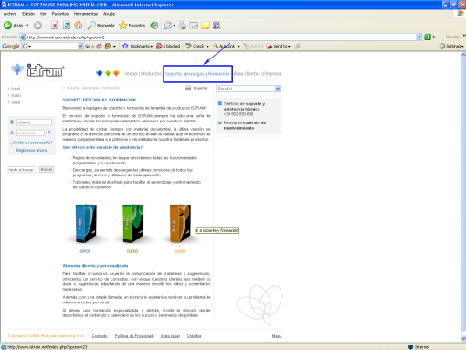
İndirme alanı şunları sunar:
- Yenilikler sayfası, programlanan tüm işlevlerin ve açıklamalarının anlatıldığı.
- İndirmeler, buradan tüm programların, sürücülerin ve her uygulamanın yardımcı programlarının en son sürümlerini indirmek mümkündür.
- Yeni kullanıcıların öğrenmesini ve eğitilmesini kolaylaştırmak için tasarlanmış eğitimler ve materyaller.
- Sayfadaki dosyaları indirebilmek için kullanıcı adı ve şifre girilmelidir. Lisansı satın aldığınızda, web sitemizin Müşteri Alanı'na girmeniz ve bilgilerinizi mümkün olduğunca öz bir şekilde yazmanız ve son olarak en önemlisi, lisans numaranızı ve kayıt talebinde bulunduğunuz ürünü (ISPOL®) belirtmeniz gerekir. Bu e-postayı gönderdiğinizde size müşteri hakları verilir ve daha sonra değiştirebileceğiniz bir başlangıç erişim şifresi içeren bir yanıt gönderilir.
- Son olarak, sadece kurulum dosyasını (istramSE.exe) indirip indirdikten sonra çalıştırmak kalır:
Programın Kaldırılması
ISTRAM®/ISPOL® uygulamasını ve tüm bileşenlerini, Başlat → Programlar → Istram → Kaldır menüsünden veya Program Ekle veya Kaldır (Windows XP) veya Programlar ve Özellikler (Windows Vista, 7 ve 8) denetim masasından kaldırabilirsiniz.
Uygulama, ISTRAM®/ISPOL® tarafından kullanılan yürütülebilir dosyaları ve kütüphaneleri ile uygulamanın kendi klasörlerini (tüm içeriğiyle birlikte) silecektir. Bu nedenle, önemli veya özelleştirilmiş dosyaları bu klasörlere kaydetmeyin, çünkü kaldırma işlemi tarafından silineceklerdir.
Güvenlik nedeniyle, işlem sırasında programın kurulduğu klasörde bulunan diğer tüm klasörler ve dosyalar korunur. Tam bir kaldırma için, bu nedenle, söz konusu klasörü manuel olarak silmek gerekecektir.
Güvenlik donanım kilidinin sürücüsünün kaldırılmasına gelince, bu, Program Ekle veya Kaldır (Windows XP ve öncesi) veya (Windows Vista, 7 ve 8) denetim masasından bağımsız olarak yapılacaktır; burada, seçilip kaldırılabilmesi için programlar listesinde tanımlayıcı bir adla görünecektir.
|